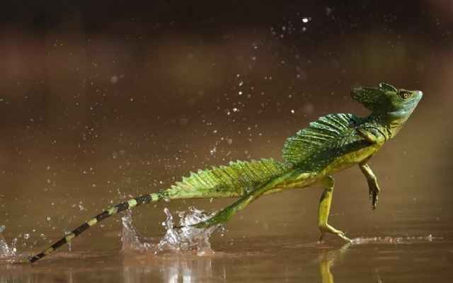

basilisco
Del lat. basiliscus, y este del gr. βασιλίσκος basilískos 'reyezuelo'.
- m.Animal fabuloso, al cual se atribuía la propiedad de matar con la vista.
- m.Persona furiosa o dañina.
- m.Reptil americano de color verde y del tamaño de una iguana pequeña.
- m.Pieza antigua de artillería, de gran calibre y mucha longitud